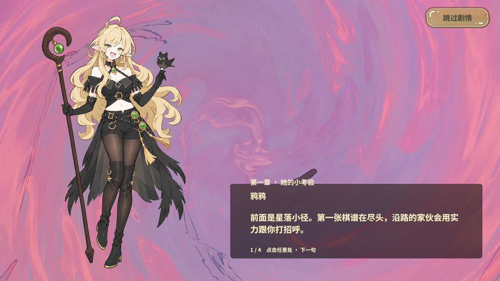
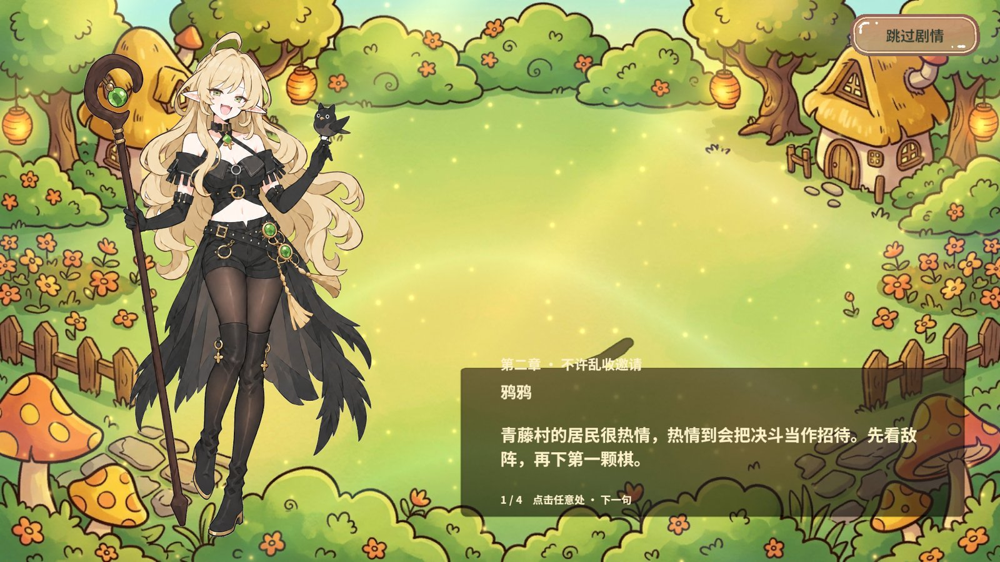
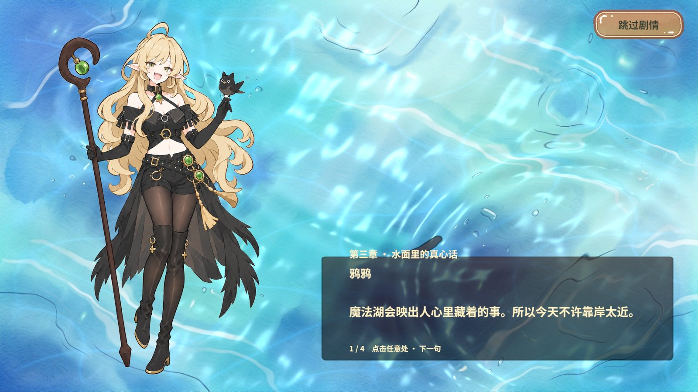
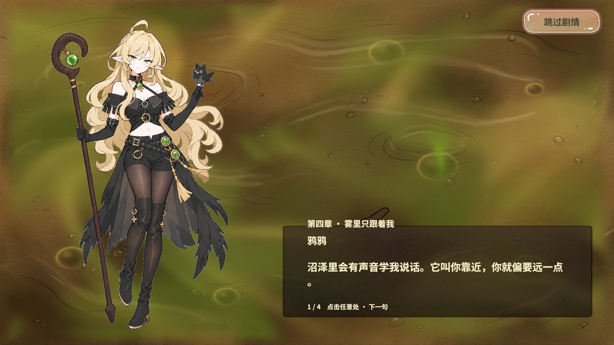
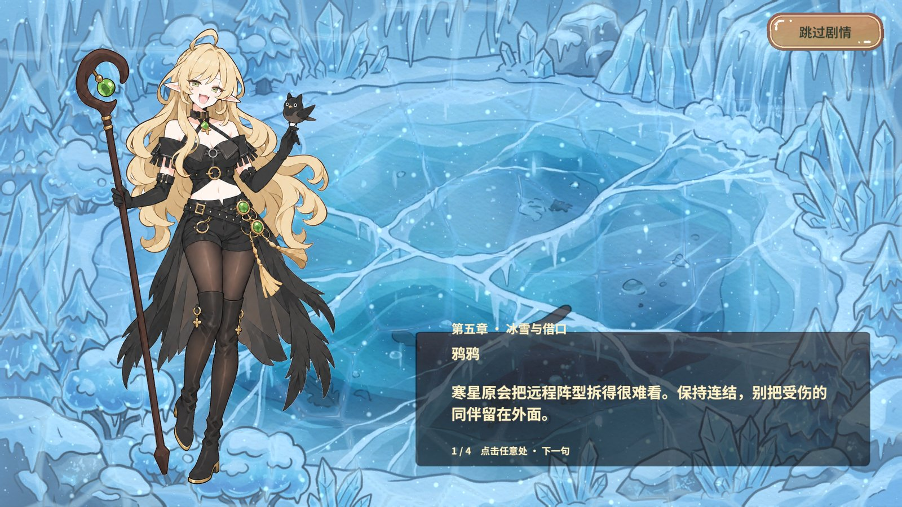
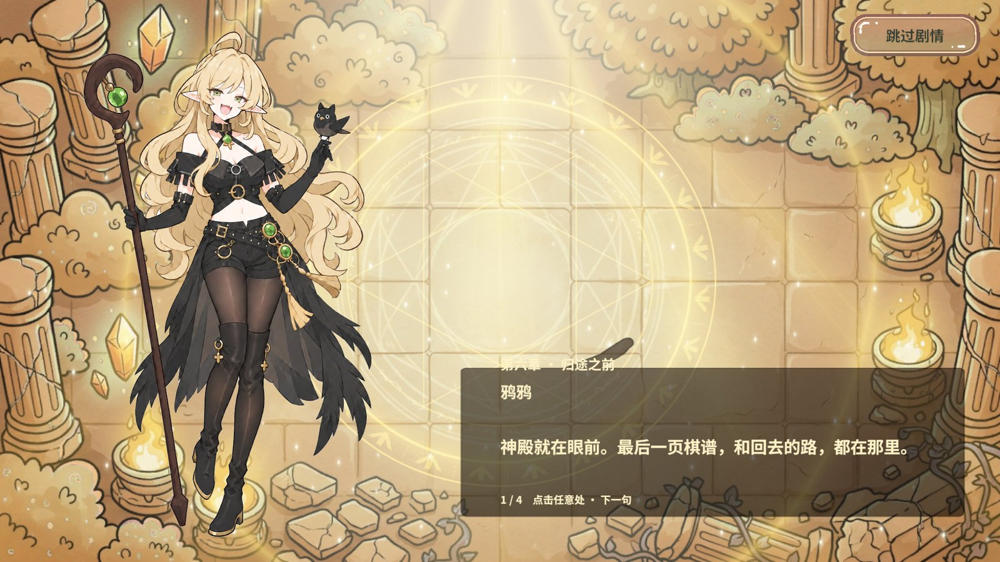
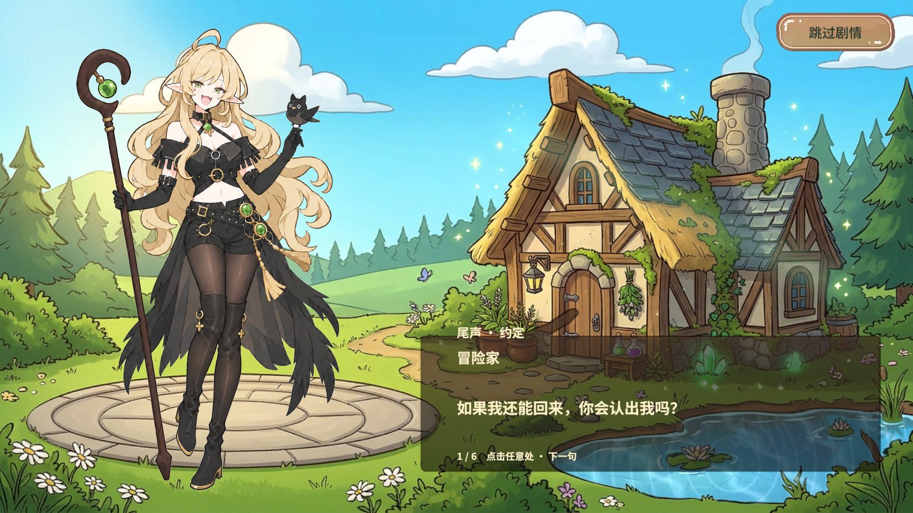
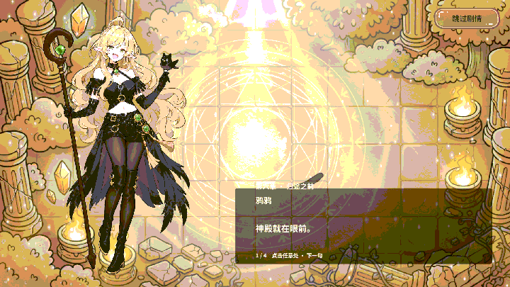

在大厅验收
执行 剧情/篇章清单 查看 ID。输入 剧情/播放篇章 chapter6 可在大厅看第六章对白与神殿。输入 剧情/播放篇章 boss_after_6 可看第六章胜后对白与同一神殿。ending 按配置显示小屋，省略 ID 播放序章。
使用点击翻页或 剧情/下一句，末句后关闭。跳过可提前结束。播放期间留在原场景，预览结束后恢复输入。玩家的剧情、教学、解锁进度和原战役保留。
实际画面
截图复核记录了两处排版现象。第四章第 1 句的句号单独折行，第六章浅色标题在神殿高光处对比较低。下方保留对应原画面。















逐篇结果
| 篇章 | 标题 | 实际背景 | 实际 Shader | 通过句数 |
|---|---|---|---|---|
opening | 序章 · 被鸦鸦捡走的冒险家 | 小屋 | LobbyMagicCottage | 12/12 |
tutorial | 第一课 · 别让我白救你 | 小屋 | LobbyMagicCottage | 5/5 |
lesson | 鸦鸦的实战提醒 | 第一章 · 图集原画 | Chapter01_Tutorial | 5/5 |
chapter1 | 第一章 · 她的小考验 | 第一章 · 图集原画 | Chapter01_Tutorial | 4/4 |
chapter2 | 第二章 · 不许乱收邀请 | 第二章 · 村落 | Chapter02_Village | 4/4 |
chapter3 | 第三章 · 水面里的真心话 | 第三章 · 湖泊 | Chapter03_Lake | 4/4 |
chapter4 | 第四章 · 雾里只跟着我 | 第四章 · 沼泽 | Chapter04_Swamp | 4/4 |
chapter5 | 第五章 · 冰雪与借口 | 第五章 · 冰雪 | Chapter05_Ice | 4/4 |
chapter6 | 第六章 · 归途之前 | 第六章 · 神殿 | Chapter06_Temple | 4/4 |
boss_after_1 | 胜后 · 一点利息 | 第一章 · 图集原画 | Chapter01_Tutorial | 2/2 |
boss_after_2 | 胜后 · 她在等你 | 第二章 · 村落 | Chapter02_Village | 2/2 |
boss_after_3 | 胜后 · 湖没有回答 | 第三章 · 湖泊 | Chapter03_Lake | 2/2 |
boss_after_4 | 胜后 · 被拉住的手 | 第四章 · 沼泽 | Chapter04_Swamp | 2/2 |
boss_after_5 | 胜后 · 融雪时分 | 第五章 · 冰雪 | Chapter05_Ice | 2/2 |
boss_after_6 | 胜后 · 魔女的条件 | 第六章 · 神殿 | Chapter06_Temple | 2/2 |
ending | 尾声 · 约定 | 小屋 | LobbyMagicCottage | 6/6 |
RevMCP 调用与结果
| 调用 | 参数与结果 |
|---|---|
rev_discover | 连接指定 RevGame.Unity 工程。编译后重进 Play，发现剧情 GM、story.state、story.yaya-state、story.background-refs。 |
rev_call | 剧情/篇章清单 核对 16 篇。剧情/播放篇章 参数 arg0=chapter6，大厅绑定 Chapter06_Temple 原画和专用 Shader。剧情/跳过 后，story.background-refs 参数 chapter=6 读到两项均为 0。另验证了第一章图集。 |
rev_run 大厅全量 | 242 步通过。冷启动时六章背景引用均为 0。逐句确认完整对白、标题、说话人、布局、背景纹理和 Shader 实际绑定，背景覆盖视口。13 个使用章节背景的篇章播放中各持有 1 份材质及原画引用，退出后均归零。每篇结束仍在 StartScene，面板关闭且输入解锁。 |
rev_run 战斗回归 | 29 步通过。第一章正式剧情和同章 GM 预览借用场景资源，引用数均保持 1。第一章战斗中预览第六章仅额外借用第六章，退出预览后第六章归零、第一章仍为 1，回大厅后第一章也归零。 |
两份计划的 finally 均成功结束测试 Play。测试前后运行 Error / Exception 计数均为 0。覆盖 Unity 2022.3.15f1c1 Editor Play 和现有 PC AB。未执行 Android、独立 Player 或其余章节的正式战役。
剧情面板和战斗共用项目背景租约，通过 RevResManager 取得材质与纹理，第一章经 GameSpriteAtlasService 取图集。RevUI 面板关闭后归还独立租约。大厅使用当前工程的默认资源绑定，战斗场景仍支持 Inspector 覆盖。现有 AB 和框架无需改动。